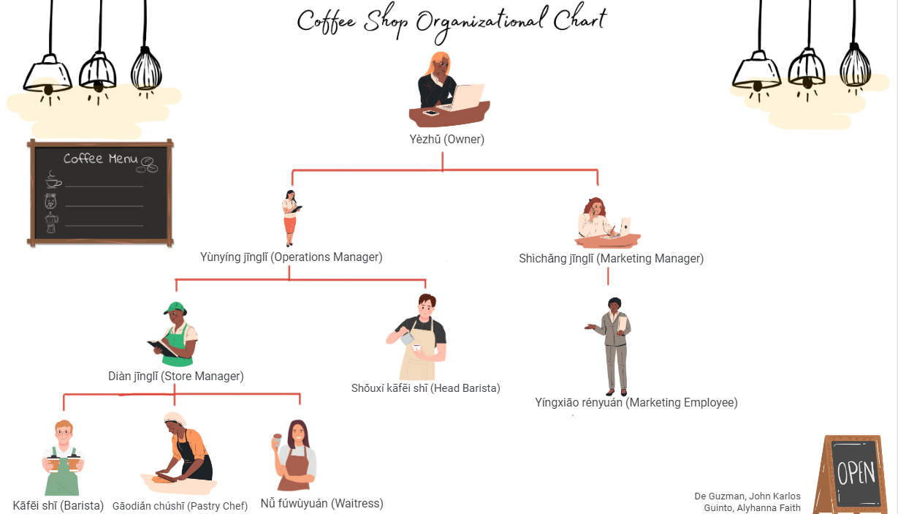

Foreign Language.
E-Portfolio Website.
Hey! I am happy to share my experience of learning Mandarin with you. It’s been a cool journey so far – working with tones, getting deeper into the characters, soaking up the culture. Join me as I learn the ins and outs of this awesome language. Let's have fun and learn together!
Hēi! Wǒ hěn gāoxìng yǔ dàjiā fēnxiǎng wǒ xuéxí pǔtōnghuà de jīngyàn. Dào mùqián wéizhǐ, zhè shì yīduàn hěn kù de lǚchéng—chǔlǐ sèdiào, shēnrù juésè, xīshōu wénhuà. Hé wǒ yīqǐ xuéxí zhè mén hěn bàng de yǔyán de xìjié. Ràng wǒmen yīqǐ kuài yuè xuéxí ba!
Hanzi Writing
Mastering the art of 'Nǐ hǎo' Hanzi characters in Mandarin! 🖋️🇨🇳 Watch as I put my calligraphy skills to the test, following the precise strokes demonstrated in the instructional video. 📹✨
Listening and Speaking
Taking on the LISTENING and SPEAKING Activity! 🎧🗣️ I'm delving into the world of Mandarin, honing my pronunciation by listening to audio files. 🗣️✨ Join me on this language-learning adventure!
Introduce Yourself in Mandarin
Ready to dive into ACTIVITY NO. 3: Teaming up for a virtual Mandarin conversation! 🗣️🌐 After tuning into the 'How to Introduce Yourself in Mandarin?' video, I'm connecting with a classmate for a virtual chat. 🤝🎥 We're practicing our dialogues, fine-tuning pronunciation, and recording the conversation for an exciting language-learning journey! 🚀📹
Getting to Know
My Best Friend
Embarking on ACTIVITY NO. 4: 'Getting to Know My Best Friend' 🤝🎥 Let's enhance our sentence construction and speaking skills by creating a short video where I introduce my best friend. 🌟 I'll be sharing details about their interests, hobbies, and more! 🏀🌐 It's a great opportunity to put into practice what I've learned in our lessons.
My Family Tree
Exciting times with ACTIVITY NO. 5: Creating an Animated Video Presentation of My Family Tree! 🌳🎥 Using my favorite video presentation tools, I'm crafting a visually stunning and informative family tree presentation in Mandarin.
Ordering Food at McDonald's
Exciting times with ACTIVITY NO. 6: Virtual Role-playing - Ordering Foods at McDonald's! 🍔🎭 Partnering up with a classmate, we're diving into a simulated conversation as a customer and a McDonald's crew member.
Final Project
FL 301 Final Project: Mandarin 1 Role-Playing 🎭 Demonstrating Mandarin language skills in realistic IT scenarios. Watch for a genuine depiction of teamwork and communication.

Organizational Chart
Chinese Culture
My Daily Routine